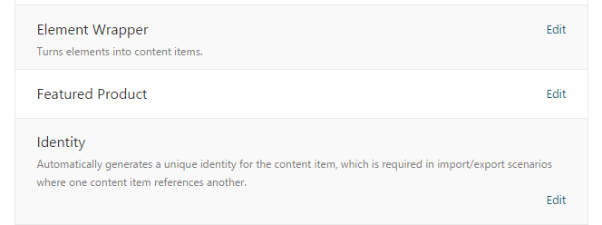

Introduction
This is part four of a four part course. It will get you started with a gentle introduction to extending Orchard at the code level. You will build a very simple module which contains a widget that shows an imaginary featured product.
It will teach you some of the basic components of module development and also encourage you to use best-practices when developing for Orchard.
If you haven't read the previous parts of this course then you can go back to the overview to learn about the Getting Started with Modules course.
This final part will look at applying some best practices to improve the quality of the module's codebase.
What's left to do
So far in the course we have covered a pretty impressive list of topics. You might be tempted to think that the items in this last part are extras but just because we saved them until last doesn't mean they aren't important.
In fact, the only reason these weren't covered earlier was because they aren't essential to being able to load up the module in Orchard and there was already plenty to discuss. Your module is not really complete though until you've incorporated these techniques into your development process.
The topics in this article will help you add polish to your module and if you're going to release them to the public it will mean the difference between a beginners module and a professional module.
Customize the manifest file
Starting with an easy one, the module.txt is a text file you will find in the root of your module folder. We have already looked at this file briefly in this course each time we have added dependencies. When Orchard is scanning the folders looking for modules to load it will parse this file to get information about it.
The module.txt is a manifest file. Technically, the document is in YAML format. If you open it now you will see the following:
Name: Orchard.LearnOrchard.FeaturedProduct
AntiForgery: enabled
Author: The Orchard Team
Website: http://orchardproject.net
Version: 1.0
OrchardVersion: 1.0
Description: Description for the module
Features:
Orchard.LearnOrchard.FeaturedProduct:
Description: Description for feature Orchard.LearnOrchard.FeaturedProduct.
The Name field at the top is a friendly text name that's displayed to the user. For example the Name field for the module in the screenshot below reads Dynamic Forms Validation Activities:

AntiForgery enables the XSS injection protection so you should have this set to enabled unless you have a specific reason to manage this yourself.
The file format is quite straightforward. The fields mean what you would expect them to mean.
Version is the version of the module.
OrchardVersion is the version of Orchard that this module was written against.
Features is the only complicated one. We didn't look at it in this course, but you can include several features within a single module. This means you can enable or disable individual parts of the module. The description field and features section work together and can be displayed in several different formats.
For a detailed explanation of the Features section and the other fields read the manifest files guide.
Time to make some changes:
-
Open
module.txt. -
Edit the
module.txtto your liking while staying within the spec. Go ahead and put your name and details into it. It feels good to see your name in lights! -
Save the file.
You will probably need to restart the development server before Orchard picks up the changes you've made to your module.txt.
Categorize your module
While we are working with the manifest file, there is one field which is very useful but not included by default in the module.txt. The field is called Category:.
If you omit this field then the module defaults to the Uncategorized grouping:

When developing your own modules you should first check the Modules section of the admin dashboard to see if your module would sit well in one of the existing common categories.
It's better to group your module with other modules where possible so that users can find related modules easily.
In this case we will make our own category, "Learn Orchard", which is the category used for all demo modules on this site:
-
Open
module.txt. -
Add the following line to the file:
Category: Learn OrchardIt doesn't matter where you put it in this case because we are only defining a single feature. In the future if your module supports multiple features then you should add in the relevant category to each feature.
-
Save the file.
You will probably need to restart the development server before Orchard picks up the changes you've made to your module.txt.
Localize all of your text
Orchard has great support for writing global aware, localized websites. Administrators can add cultures to their site for a wide variety of different languages.
This means that as a module developer you can't know ahead of time what language your module will be used in. Orchard makes it possible for you to support this scenario by wrapping all of your text in a T() method.
Every string that you display in Orchard should be passed through the T() method.
When you are working with Razor views the T() is automatically available. So, for example, this snippet from the FeaturedProduct.cshtml view would change from:
<p class="sale-red">ON SALE!</p>
Over to:
<p class="sale-red">@T("ON SALE!")</p>
If you need to inject variables into the string then you should use String.Format() style formatting. Don't try to concatenate them. For example, if you had a snippet that looked like this:
<p>Today's featured product is the @Model.ProductName.</p>
The correct way to format this would be:
<p>@T("Today's featured product is the {0}.", @Model.ProductName)</p>
Don't use concatenation because the position of the variable might change in different translations.
This is BAD:
<p>@T("You have ") + @Model.SmsCredits + @T(" credits left.")</p>This is GOOD:
<p>@T("You have {0} credits left.", @Model.SmsCredits)</p>
Let's update the front end view so that it follows the correct localized development best practices:
-
Open
.\Views\Parts\FeaturedProduct.cshtml -
Wrap each of the four blocks of text in their own
@T()calls:@if (Model.ContentPart.IsOnSale) { <p class="sale-red">@T("ON SALE!")</p> } <p>@T("Today's featured product is the Sprocket 9000.")</p> @if (!Model.IsOnFeaturedProductPage) { <p><a href="~/sprocket-9000" class="btn-green"> @T("Click here to view it.") </a></p> } else { <p class="box-purple">@T("Read more about it on this page.")</p> }
In the model class we used the [DisplayName] attribute on the IsOnSale property. The [DisplayName] is an ASP.NET MVC attribute which allows you to automatically inject a descriptive label into your UI.
Unfortunately Orchard's localization system doesn't intercept this information so when creating localized labels we need to pass the display name in each time.
There is a pull request currently being discussed for this issue which will hopefully bring in a
[LocalizedDisplayName()]attribute that will solve this issue.
To localize the label with our [DisplayName] text we need to pass an extra parameter in to the @Html.LabelFor() so. This would look something like this:
@Html.LabelFor(model => model.IsOnSale, T("Is the featured product on sale?"))
However, this kind of duplication of the text is not a best practice. Instead there is a way to pull the [DisplayName] attribute text in and pass it through the T() and into the LabelFor():
-
Open
.\Views\EditorTemplates\Parts\FeaturedProduct.cshtml -
Find the call to
LabelFor:@Html.LabelFor(model => model.IsOnSale)And replace it with:
@Html.LabelFor(model => model.IsOnSale, T(Html.DisplayNameFor(model => model.IsOnSale).ToHtmlString()))
Localization is an important topic in Orchard. Read the using the localization helpers and the creating global ready applications guides for more detailed information about supporting this feature.
Your styles shouldn't be inline
Hopefully this one should have raised some alarm bells as you were doing this - having a <style> tag in the view is not a good HTML practice. You should always put your CSS into an external .css file. This allows the browser to download the file once for each the sites and keep it cached for subsequent requests.
However, just putting the styles into an external file is not the whole story with Orchard. It provides two techniques to help you include scripts and styles within your view.
The quick fix for this is to move the CSS into a .css file and then use Script.Require("filename.css") to include it:
-
In the Solution Explorer,
right clickon theStylesfolder within the module. -
Choose
Add,New Item...from the context menu. -
Select
Visual C#thenWebfrom the categories down the left hand side. -
Find
Style Sheetin the list and give it aName:ofFeaturedProduct.css. -
Click
Add. -
Open
.\Views\Parts\FeaturedProduct.cshtml. -
Copy the css content from within the
<style>tag (don't include the<style>tag itself) and drop it into theFeaturedProduct.cssstyle sheet. -
Go back to
FeaturedProduct.cshtmland replace the now empty<style></style>with this code:@{ Style.Include("FeaturedProduct.css"); }
If you don't specify a folder then Orchard will automatically check the .\Styles folder first.
This is a quick solution but not a best practice solution so let's improve it a bit further. The problem with Style.Include() is that it blindly includes the file whenever requested. Orchard supports something called a ResourceManifest class which can help you manage your external resources in a more intelligent way.
Using the resource manifest class you can assign extra information to your CSS files. This could be alternative URLs to use for debug / live, content delivery networks, setting the version of the script or setting dependencies on other other resources that have been added.
I have used the word resources so far when describing this feature. This is because you can use it for managing both scripts and style sheets.
Each resource is assigned a plain text name. This can then be used in the view and it can also be used if another resource needs to depend on it.
This class is normally found in the ResourceManifest.cs file in the root of your module folder but as long as your class implements the IResourceManifestProvider interface then Orchard will pick it up.
The example code below is a shortened version of the Orchard.Layouts ResourceManifest.cs file:
using Orchard.UI.Resources;
namespace Orchard.Layouts {
public class ResourceManifest : IResourceManifestProvider {
public void BuildManifests(ResourceManifestBuilder builder) {
var manifest = builder.Add();
manifest.DefineScript("Layouts.Lib")
.SetUrl("Lib.min.js", "Lib.js")
.SetDependencies("jQuery");
manifest.DefineScript("Layouts.Models")
.SetUrl("Models.min.js", "Models.js")
.SetDependencies("jQuery", "Layouts.Lib");
}
}
}
You can see that a few of the features of the resource manifest are being used here. The first script, called Layouts.Lib uses SetUrl() to set up minified (live) and unminified (debug) filenames for the resource.
It also sets a dependency on a resource called jQuery. This is a common feature that you will see throughout many Orchard modules. The jQuery resource comes from the Orchard.jQuery module. If you looked in the Orchard.Layouts module.txt then you would find that it specifies a dependency on the Orchard.jQuery module.
This kind of external dependency shows off some more of the resource manager features:
-
You can share the resource strings between different modules so that dependencies for common scripts can be centrally managed.
-
If you look in the views of the
Orchard.Layoutsmodule you won't find any includes for the jQuery script.When the
Layouts.Libresource sets a dependency on thejQueryresource Orchard automatically knows to generate ajQueryscript tag before theLayouts.Libscript tag.So you will find some code like
Script.Require("Layouts.Lib").AtFoot();in the view butScript.Require("jQuery").AtFoot();isn't needed. -
You will also just find jQuery included just once, no matter how many modules have requested the script.
This is because Orchard recognizes the resource. It pools the requests together and knows how to order the scripts correctly.
The second DefineScript in the example above is included just to show that you can include multiple dependencies in your SetDependencies() call.
Now that its clear what service the resource manifest provides, let's upgrade the module to use this feature of Orchard:
-
In the Solution Explorer,
right clickon the module's project name. -
Select
Add,New Item...and add a class calledResourceManifest.cs. -
Add the
IResourceManifestProviderinterface to theResourceManfiestclass:public class ResourceManifest : IResourceManifestProvider { } -
Use the
Ctrl-.technique to add theusing Orchard.UI.Resources;namespace. -
You will now notice that the
IResourceManifestProviderstill has its red squiggles underneath it:Use the
Ctrl-.technique a second time to implement the interface. Choose the first option,Implement interface. -
Remove the
throw new NotImplementedException();line of code. -
In it's space add in the following code:
var manifest = builder.Add(); manifest.DefineStyle("FeaturedProduct").SetUrl("FeaturedProduct.css");Orchard knows to automatically check the
.\Styles\folder for this style sheet.The name we assign in the
DefineStyle()call is how we can reference this in the view. -
Open up the front-end view located in
.\Views\Parts\FeaturedProduct.cshtml -
Replace the
Style.Include()call, which is used to directly reference style sheets, with aStyle.Require()call. This is used to refer to resources defined in resource manifest files:@{ Style.Require("FeaturedProduct"); }Don't forget that the resource doesn't need the
.cssextension on the end.
If you run the module in Orchard now then it will look the same as it did before. While this is a simplistic application of a best practice, I think that from the explanation of it you will see how valuable it will be in more complex modules.
Orchard also has an assets pipeline feature. This feature can help build your resources into the final files to be included by Orchard in the resource manifest. For example, you might want to combine the scripts into a single file or minify your style sheets. If you look in your project you will see a file called Assets.json which drives this feature.
Don't tie your CSS classes to the visuals
The CSS classes used throughout the module so far have been intentionally terrible. The reason for this was to highlight the fact that you shouldn't tie the class names to the visuals of the class.
When your module is out there in the wild it will be used by many different themes which will all provide their own color schemes and styles.
If somebody took our module and wanted to make the On Sale! label yellow, the class name of sale-red would not make sense.
Instead you should describe the functionality that the class is styling.
Let's take a look at the class names we have used so far and improve them based on this best practice:
| Current class name | Improved class name |
|---|---|
| .btn-green | .btn-featuredproduct |
| .sale-red | .label-onsale |
| .box-purple | .box-moreinfoavailable |
You might have your own ideas for some improved class names. As long as they don't tie your functionality to a specific visual style you can use whatever you think is best.
This is actually a best practice for all of your style sheets. Over time your website projects will be refined and even redesigned. You shouldn't tie your classes to the visual designs in any area of your project.
Apply these changes to the module:
-
Open the
.\Styles\FeaturedProduct.cssfile. -
Change
.btn-greento.btn-featuredproduct -
Change
.sale-redto.label-onsale -
Change
.box-purpleto.box-moreinfoavailable -
Open the front-end view at
.\Views\Parts\FeaturedProduct.cshtml -
Update the view to reflect the new class names:
@{ Style.Require("FeaturedProduct"); } @if (Model.ContentPart.IsOnSale) { <p class="label-onsale">@T("ON SALE!")</p> } <p>@T("Today's featured product is the Sprocket 9000.")</p> @if (!Model.IsOnFeaturedProductPage) { <p><a href="~/sprocket-9000" class="btn-featuredproduct"> @T("Click here to view it.")</a> </p> } else { <p class="box-moreinfoavailable">@T("Read more about it on this page.")</p> }
Use services instead of making a mess in your driver
In part three of this course we spent our time making a complete mess of the driver class.
We took a nice clean driver class that wires data to the view via shapes and added on many modifications. We added dependencies, then we built private variables into it, finally we wrote lines of business logic into the shape factory lambda, diluting its focus.
The modifications we made are also tied directly to that driver class. It's entirely plausible that you might want to extend the module and need to reuse that information.
The Orchard.Layouts module (which is used to manage the contents of pages within Orchard) has the concept of building Elements. They are like widgets that you can place on to the layout Canvas. If you wrote a custom element for this module then it would need to duplicate the code we wrote in widget driver class. This code should live in a central location.
We have already used a built-in version of the solution to this problem; the Orchard services, such as IContentManager. These services are used throughout Orchard so that they can share their functionality. Each of the services implements IDependency to share this access.
In exactly the same way that we used dependency injection to request access to various Orchard services, we can write our own IDependency and let the driver ask for this.
By writing our own service we will wrap up all the driver modifications into its own class and then supply a single method which can answer the question for the driver: "Is the current page the featured item page?"
The first step to creating your own service is to write an interface for the class. The second step is to write a concrete class which implements that interface. Then we move the code from the driver to the concrete class. Then we request the service in the driver and use its functionality.
The way dependency injection works is that you request an interface to be injected and based on the configuration values of the system your request is resolved to the best matching concrete class.
In our case there will be only one concrete class so it will be a simple decision but this highlights again the extensibility of the Orchard architecture. There is nothing stopping a developer coming along and writing their own version of a particular service and configuring the dependency injection framework to use theirs instead. When you only work with the interface it doesn't matter to you which underlying class is provided.
Let's upgrade the module to use our own service:
-
In the Solution Explorer,
right clickon the module's project name. -
Select
Add,New Folderand name itServices -
Right clicktheServicesfolder, selectAdd,New Item.... -
Select the
Interfaceitem template, name itIFeaturedProductServiceand clickAdd -
The interface should be public so add that keyword to the start of the interface declaration. It should also implement the
IDependencyinterface:public interface IFeaturedProductService : IDependency { -
The purpose of the service is to answer a single question, so add a method declaration to the interface called
IsOnFeaturedProductPagewhich returnsbool. You don't need to specify thepublicmodifier when working with an interface:public interface IFeaturedProductService : IDependency { bool IsOnFeaturedProductPage(); } -
Add a class to the services folder called
FeaturedProductService. This will be the concrete implementation that we place the actual code into. -
Add the
IFeaturedProductServiceinterface to the class:public class FeaturedProductService : IFeaturedProductService { -
Implement its interface using the
Ctrl-.technique. -
Now its time to start moving the code over. Open up the
FeaturedProductDriver.csfile that's in the.\Drivers\folder. Review the code and start thinking about what could be moved out into the service class. -
The
CurrentContentproperty is only used for calculating theIsOnFeaturedProductPagevalue. The three private variables which hold references to Orchard services are only used by theCurrentContentproperty. This means everything from the start of the class through to the end of the constructor can be moved over. -
Cut the following code from the driver and paste it into the service class:
private readonly IContentManager _contentManager; private readonly IWorkContextAccessor _workContextAccessor; private readonly IAliasService _aliasService; private IContent _currentContent = null; private IContent CurrentContent { get { if (_currentContent == null) { var itemRoute = _aliasService.Get(_workContextAccessor.GetContext() .HttpContext.Request.AppRelativeCurrentExecutionFilePath .Substring(1).Trim('/')); _currentContent = _contentManager .Get(Convert.ToInt32(itemRoute["Id"])); } return _currentContent; } } public FeaturedProductDriver(IContentManager contentManager, IWorkContextAccessor workContextAccessor, IAliasService aliasService) { _contentManager = contentManager; _workContextAccessor = workContextAccessor; _aliasService = aliasService; } -
The private variables need several namespaces adding to be valid code. Use the
Ctrl-.technique to add in the requiredusingstatements. -
The constructor now has the wrong name, update it from
FeaturedProductDrivertoFeaturedProductService.
Go back to the driver class and look at the Display() method. We want to pull the business logic code out into the service.
This means the code from the bool isOnFeaturedProductPage to the start of the return statement can be moved:
-
Cut the following code and paste it into the
IsOnFeaturedProductPage()method of the service class:bool isOnFeaturedProductPage = false; var itemTypeName = CurrentContent.ContentItem.TypeDefinition.Name; if (itemTypeName.Equals("Product", StringComparison.InvariantCultureIgnoreCase)) { var dynamicContentItem = (dynamic)CurrentContent.ContentItem; var itemProductId = dynamicContentItem.Product.ProductId.Value; if(itemProductId.Equals("SPROCKET9000", StringComparison.InvariantCulture)) { isOnFeaturedProductPage = true; } } -
Delete the
throw new NotImplementedException();line if its still in there. -
The
IsOnFeaturedProductPage()method should return aboolso add a return value to passisOnFeaturedProductPageback:public bool IsOnFeaturedProductPage() { //..snip.. return isOnFeaturedProductPage; }
The service class is now complete. Your completed service class FeaturedProductService.cs should now look like this:
using System;
using Orchard.Alias;
using Orchard.ContentManagement;
namespace Orchard.LearnOrchard.FeaturedProduct.Services {
public class FeaturedProductService : IFeaturedProductService {
private readonly IContentManager _contentManager;
private readonly IWorkContextAccessor _workContextAccessor;
private readonly IAliasService _aliasService;
private IContent _currentContent = null;
private IContent CurrentContent {
get {
if (_currentContent == null) {
var itemRoute = _aliasService.Get(_workContextAccessor.GetContext()
.HttpContext.Request.AppRelativeCurrentExecutionFilePath
.Substring(1).Trim('/'));
_currentContent = _contentManager.Get(Convert.ToInt32(itemRoute["Id"]));
}
return _currentContent;
}
}
public FeaturedProductService(IContentManager contentManager,
IWorkContextAccessor workContextAccessor,
IAliasService aliasService) {
_contentManager = contentManager;
_workContextAccessor = workContextAccessor;
_aliasService = aliasService;
}
public bool IsOnFeaturedProductPage() {
bool isOnFeaturedProductPage = false;
var itemTypeName = CurrentContent.ContentItem.TypeDefinition.Name;
if (itemTypeName.Equals("Product",
StringComparison.InvariantCultureIgnoreCase)) {
var dynamicContentItem = (dynamic)CurrentContent.ContentItem;
var itemProductId = dynamicContentItem.Product.ProductId.Value;
if(itemProductId.Equals("SPROCKET9000",
StringComparison.InvariantCulture)) {
isOnFeaturedProductPage = true;
}
}
return isOnFeaturedProductPage;
}
}
}
Now you have separated out the functionality into a service class. This means you can keep your driver clean and also re-use it in the future.
The driver class can now be modified so that the service is injected as a dependency.
-
Switch to the driver class again. There should be a red squiggly underneath the usage of
isOnFeaturedProductPagebecause it no longer exists. In order to pull this information from the service we need to inject it via the constructor.Add a new private variable to hold the service reference. Don't forget we always work with the interface when using the dependency injection features:
private readonly IFeaturedProductService _featuredProductService; -
The
IFeaturedProductServicewill need its namespace adding. Do it via theCtrl-.shortcut. -
Create a default constructor which will request an instance of
IFeaturedProductService:public FeaturedProductDriver(IFeaturedProductService featuredProductService) { }Make sure you add the
publickeyword at the start orAutofacwill thrown an exception. -
Assign the injected constructor parameter to the private variable:
public FeaturedProductDriver(IFeaturedProductService featuredProductService) { _featuredProductService = featuredProductService; } -
Update the
Display()method so that it uses the new service:protected override DriverResult Display(FeaturedProductPart part, string displayType, dynamic shapeHelper) { return ContentShape("Parts_FeaturedProduct", () => { return shapeHelper.Parts_FeaturedProduct( IsOnFeaturedProductPage: _featuredProductService .IsOnFeaturedProductPage()); }); }
Your FeaturedProductDriver.cs class should now look like this:
using Orchard.ContentManagement;
using Orchard.ContentManagement.Drivers;
using Orchard.LearnOrchard.FeaturedProduct.Models;
using Orchard.LearnOrchard.FeaturedProduct.Services;
namespace Orchard.LearnOrchard.FeaturedProduct.Drivers {
public class FeaturedProductDriver : ContentPartDriver<FeaturedProductPart> {
private readonly IFeaturedProductService _featuredProductService;
public FeaturedProductDriver(IFeaturedProductService featuredProductService) {
_featuredProductService = featuredProductService;
}
protected override DriverResult Display(FeaturedProductPart part,
string displayType, dynamic shapeHelper) {
return ContentShape("Parts_FeaturedProduct", () => {
return shapeHelper.Parts_FeaturedProduct(IsOnFeaturedProductPage:
_featuredProductService.IsOnFeaturedProductPage());
});
}
protected override DriverResult Editor(FeaturedProductPart part,
dynamic shapeHelper) {
return ContentShape("Parts_FeaturedProduct_Edit",
() => shapeHelper.EditorTemplate(
TemplateName: "Parts/FeaturedProduct",
Model: part,
Prefix: Prefix));
}
protected override DriverResult Editor(FeaturedProductPart part,
IUpdateModel updater, dynamic shapeHelper) {
updater.TryUpdateModel(part, Prefix, null, null);
return Editor(part, shapeHelper);
}
}
}
Now the driver class is clean again and only has dependencies that it directly needs.
Describe your content parts
We created the content part (the widget) back in the first part of this course. However, we missed a best practice when running that initial data migration because the content part was created without a description.
You should always add a description to your parts so that it's clear what they do. Both your users and likely even yourself when you come back in a few months time will need a prompt which explains what it's for.
The description can be added within a data migration by calling WithDescription("Your description here").
The description is displayed in the admin dashboard in the content definition section:

And when you are working with the content part:

Let's add an update to the data migration class so that this is populated:
-
Open the
Migrations.cslocated in the root folder of the module. -
Each time you want to add a new migration you add one to the number in your
UpdateFromN()methods. Unless you have been experimenting with the code you should be onUpdateFrom2()now. Add this method to the class and set its return value to3:public int UpdateFrom2() { return 3; } -
We want to edit the description by using
.WithDescription()on the part.Add this code into the method:
ContentDefinitionManager.AlterPartDefinition( typeof(FeaturedProductPart).Name, part => part .WithDescription("Renders information about the featured product.")); -
The
.WithDescriptionmethod is an extension method in it's own namespace. If you have cleaned up your using statements in one of the previous parts you will need to useCtrl-.to add theusingin.
Your Migrations.cs file should now look like this:
using Orchard.ContentManagement.MetaData;
using Orchard.Core.Common.Models;
using Orchard.Core.Contents.Extensions;
using Orchard.Data.Migration;
using Orchard.LearnOrchard.FeaturedProduct.Models;
using Orchard.Widgets.Models;
namespace Orchard.LearnOrchard.FeaturedProduct {
public class Migrations : DataMigrationImpl {
public int Create() {
ContentDefinitionManager.AlterTypeDefinition(
"FeaturedProductWidget", cfg => cfg
.WithSetting("Stereotype", "Widget")
.WithPart(typeof(FeaturedProductPart).Name)
.WithPart(typeof(CommonPart).Name)
.WithPart(typeof(WidgetPart).Name));
return 1;
}
public int UpdateFrom1() {
SchemaBuilder.CreateTable(typeof(FeaturedProductPartRecord).Name,
table => table
.ContentPartRecord()
.Column<bool>("IsOnSale"));
return 2;
}
public int UpdateFrom2() {
ContentDefinitionManager.AlterPartDefinition(
typeof(FeaturedProductPart).Name, part => part
.WithDescription(
"Renders information about the current featured product."));
return 3;
}
}
}
If you load the Orchard site up in the web browser then the data migration will automatically run. You can see the updated description in the Content Definitions page:
-
Within Visual Studio, press
Ctrl-F5to load up the dev server. -
Navigate to the admin dashboard and click the
Content Definitionmenu option. -
Click the
Content Partstab along the top of the page. -
Scroll down to the
Featured Productentry. It will now have a description:
Roll your data migrations up into Create()
Now our Migrations class contains a Create() and two UpdateFromN() methods. As time goes on it will get more added.
We may have some updates which revert earlier mistakes or remove features that aren't needed. There is no point in making a new user that's installing the module for the first time to go through all of these steps if they are no longer needed for the final product.
Instead we should keep the Create() as a pristine record of the way we want our data to be configured for the current codebase. At the end of the Create() we can then return a higher number which will leapfrog the Create() method over all the unnecessary UpdateFromN() calls.
At the moment the Migrations.cs is on UpdateFrom2() which has a return value of 3. This is the value that we want new installs to start at.
The first update calls CreateTable() on a SchemaBuilder instance. That can be copied in to the end of the Create() method.
The second update uses AlterPartDefinition() which is another method on the ContentDefinitionManager class so technically this could be chained on to the end of the ContentDefinitionManager instance already in use in the Create() method.
In practice however, it is common to separate out the work on each content type / part to its own statement block.
This means the process will be as follows:
-
Open the
Migrations.cslocated in the root folder of the module. -
Copy the
CreateTable()call fromUpdateFrom1()to theCreate()method so that yourCreate()method now looks like this:public int Create() { // Featured Product Widget ContentDefinitionManager.AlterTypeDefinition( "FeaturedProductWidget", cfg => cfg .WithSetting("Stereotype", "Widget") .WithPart(typeof(FeaturedProductPart).Name) .WithPart(typeof(CommonPart).Name) .WithPart(typeof(WidgetPart).Name)); // Featured Product Part Record SchemaBuilder.CreateTable(typeof(FeaturedProductPartRecord).Name, table => table .ContentPartRecord() .Column<bool>("IsOnSale")); return 1; }Leave the original
UpdateFrom1()method intact. -
Copy the
AlterPartDefinition()call fromUpdateFrom2()to theCreate()method so that yourCreate()method now looks like this:public int Create() { // Featured Product Widget ContentDefinitionManager.AlterTypeDefinition( "FeaturedProductWidget", cfg => cfg .WithSetting("Stereotype", "Widget") .WithPart(typeof(FeaturedProductPart).Name) .WithPart(typeof(CommonPart).Name) .WithPart(typeof(WidgetPart).Name)); // Featured Product Part ContentDefinitionManager.AlterPartDefinition( typeof(FeaturedProductPart).Name, part => part .WithDescription("Renders information about the featured product.")); // Featured Product Part Record SchemaBuilder.CreateTable(typeof(FeaturedProductPartRecord).Name, table => table .ContentPartRecord() .Column<bool>("IsOnSale")); return 1; }Leave the original
UpdateFrom2()method intact. -
Update the
Create()methods return value fromreturn 1;toreturn 3;
Your Migrations.cs file should now look like this:
using Orchard.ContentManagement.MetaData;
using Orchard.Core.Common.Models;
using Orchard.Core.Contents.Extensions;
using Orchard.Data.Migration;
using Orchard.LearnOrchard.FeaturedProduct.Models;
using Orchard.Widgets.Models;
namespace Orchard.LearnOrchard.FeaturedProduct {
public class Migrations : DataMigrationImpl {
public int Create() {
// Featured Product Widget
ContentDefinitionManager.AlterTypeDefinition(
"FeaturedProductWidget", cfg => cfg
.WithSetting("Stereotype", "Widget")
.WithPart(typeof(FeaturedProductPart).Name)
.WithPart(typeof(CommonPart).Name)
.WithPart(typeof(WidgetPart).Name));
// Featured Product Part
ContentDefinitionManager.AlterPartDefinition(
typeof(FeaturedProductPart).Name, part => part
.WithDescription(
"Renders information about the featured product."));
// Featured Product Part Record
SchemaBuilder.CreateTable(typeof(FeaturedProductPartRecord).Name,
table => table
.ContentPartRecord()
.Column<bool>("IsOnSale"));
return 3;
}
public int UpdateFrom1() {
SchemaBuilder.CreateTable(typeof(FeaturedProductPartRecord).Name,
table => table
.ContentPartRecord()
.Column<bool>("IsOnSale"));
return 2;
}
public int UpdateFrom2() {
ContentDefinitionManager.AlterPartDefinition(
typeof(FeaturedProductPart).Name, part => part
.WithDescription(
"Renders information about the featured product."));
return 3;
}
}
}
In the future when you add new updates to your Migration you should follow these steps:
- Create a new
UpdateFromN()method. - Set the appropriate
returnvalue. - Apply the amendments you want to make within the update method.
- Alter the
Create()method so that it creates your data in the correct way your codebase is expecting for a fresh install. - Update the
returnvalue ofCreate()so that it matches the return value of theUpdateFromN()you just created.
Download the code for this lesson
You can download a copy of the module so far at this link:
To use it in Orchard simply extract the archive into the modules directory at .\src\Orchard.Web\Modules\. If you already have the module installed from a previous part then delete that folder first.
For Orchard to recognize it the folder name should match the name of the module. Make sure that the folder name is
Orchard.LearnOrchard.FeaturedProductand then the modules files are located directly under that.
Conclusion
In this course we have looked at many of the core components that make up a module. These topics included:
- Command-line scaffolding
- Module.txt manifest
- ContentPart
- ContentPartRecord
- Widget
- Data migration
- Dependency injection
- Handler
- Driver
- Editor view
- Front-end view
- Placement.info
- Content types via the admin dashboard
- Fields
- Localization
- Module dependencies
- Resource manifest
- Services
- Orchard API
This should have given you a solid grounding for extending Orchard via code. With this knowledge you can now build your own simple modules and you will also understand the documentation found elsewhere on this site and around the web.
Bonus Exercise: Using the skills you have now learned, research implement the following:
Add a Content Picker Field to the
FeaturedProductWidgetpart so that you can select aProductto be featured.Implement the code so that the widget will work with the selected
Productrather than using the hard-coded information we supplied throughout this course.You can find the information to complete this exercise by using resources such as this documentation website, reading the Orchard source code and searching the World Wide Web.